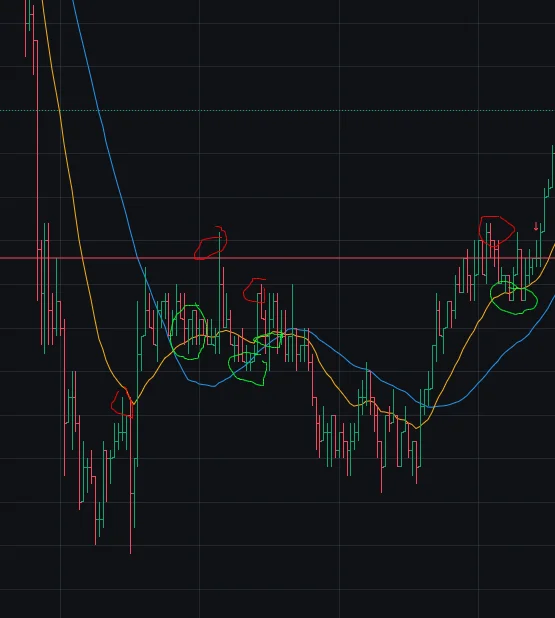

Арбитраж: особенности открытия и закрытия сделки
Почему это вообще важно?
Арбитражное расхождение это часто крохи. До 1% уже более менее выгодно. В роликах, конечно, покажут 7%. Ну,
давай, найди такое. Часто такая возможность выпадает на запоздалом открытии актива, скажем, на Бинансе, когда
все остальные биржи уже им вовсю торгуют. Тогда актив волатильный, ценник не устаканен, можно увидеть несколько
процентов.
Но, допустим, если трейдить просто на MEXC, то там 0.4%+ уже
более менее.
Ок, подумаешь, ты, найду 0.5%, прикинем, там открылись, тут закрылись, отнимем 0% fee ( MEXC раздает часто).
В стройной теории да, но есть, практические нюансы.
Повышенная волатильность не дает зайти на расслабоне
Ценник может скакать довольно сильно и быстро, повышенные объемы торгов по паре не дадут налегке
зайти
руками. У тебя есть робот? У меня есть, но прикол в том что он только на спот, фьючи MEXC не разрешает через
API торговать. Metascalp, похоже, может, но есть мысль, что MEXC за это в бан вынесет когда успешным станешь. Да и
Metascalp это все равно про руками.
Так что либо жди снижения волатильности и аккуратненько заходи, либо действуй через лимитки, глядя на график.
Как зайти руками аккуратно
Подготовь спот ордер (если обычный клиент, да и в metascalp тоже надо понимать) и фьюч ордер, чтобы осталось
только нажать кнопку.
В принципе, MEXC разрешает 0% часто для тейкера. Ну
пользуйся, для быстрого открытия на фьюче норм. И да, потренируйся, на 1 млн долларов сразу влетать не надо.
Как расчитать вход, глядя на график
Для этой арбитражной схемы (спот+фьюч) я открываю сначала спот (обычно, сложнее открыть из-за низких
объемов) потом открываю фьюч. В такой схеме надо, чтобы ценник дальше пошел слегка наверх.
Вот картинка. Капитан Очевидность заявляет, что красные кружки - заходить плохо, зеленые - заходить хорошо.
Конечно постфактум мы все, в некотором роде, такие капитаны.
Но, в целом, накинь EMA+SMA на график (какие хочешь, тут длина средних 20+40 и это 5 минутка) и подожди
подхода к средней. На 1 минутке ждать надо мало. А, еще Герчик советует: можешь глянуть уровни.

Кстати, зануда скажет: а нафига тогда арбитражить, если так ловко можно входить в сделку то.
Зачем фьюч в итоге, просто закройся повыше спотом. Ну да, можно. Но у меня так чего-то не получается, а
вот на арбитраже как-то выходит. Наверное, жадность подводит. Хотя на реддите как-то видел такой простой
алгоритм торговли. Ну и, сидя в более менее спокойной связке, не забывай, что ты получаешь около 10%
годовых (обычно по фьючам лонги платят)
Закрытие сделки
Ну тоже самое же только в обратном порядке. Либо жди схождения и снижения волатильности, либо
накинь лимитки для закрытия с учетом средних или важных уровней.
И лично я выхожу сначала фьючом. Все-таки так спокойнее и спот держать всяк побезопаснее.